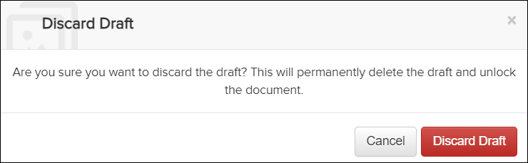

Not applicable for Pinpoint Standalone Light.
You can discard a draft when it is no longer needed. This can occur if the changes are no longer required or if the draft was created accidentally.
To discard a draft, do these steps:
